Home
原来一直使用opencv进行相机标定，但是偶尔误差很大，或者每次使用相同图片进行标定，但是计算出来的结果不同。所以这次使用Matlab 2014进行标定试验一下。
下面是参考链接：
MATLAB相机标定工具箱 MATLAB二维相机标定的解决方案 calibration
如何通过Matlab获取相机参数进行相机标定
使用MATLAB实现相机标定
下面转载内容来自上面链接，图片已经换成我自己做实验的截图：
相机标定的定义：
在图像测量过程以及机器视觉应用中，为确定空间物体表面某点的三维几何位置 与其在图像中对应点之间的相互关系，必须建立相机成像的几何模型， 这些几何模型参数就是相机参数。 在大多数条件下这些参数必须通过实验与计算才能得到， 这个求解参数的过程就称之为相机标定（或摄像机标定）。
常用术语
中文名 英文名 内参矩阵 Intrinsic Matrix 焦距 Focal Length 主点 Principal Point 径向畸变 Radial Distortion 切向畸变 Tangential Distortion 旋转矩阵 Rotation Matrices 平移向量 Translation Vectors 平均重投影误差 Mean Reprojection Error 重投影误差 Reprojection Errors 重投影点 Reprojected Points
标定步骤
1、打印一张棋盘格，把它贴在一个平面上，作为标定物。 2、通过调整标定物或摄像机的方向，为标定物拍摄一些不同方向的照片。 3、从照片中提取棋盘格角点。 4、估算理想无畸变的情况下，五个内参和六个外参。 5、应用最小二乘法估算实际存在径向畸变下的畸变系数。 6、极大似然法，优化估计，提升估计精度。
应用程序下找到Camera Calibration工具箱,或者 在命令行下面输入cameraCalibrator，启动MATLAB相机标定、相机矫正界面
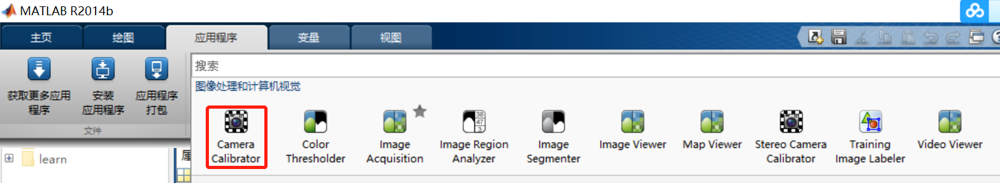
拍照。如果你是做相机标定，你应该知道，你需要一些calibration template来拍照，可以参考大多数相机标定的文章（如Tsai的文章）,常用的是黑白方块，自己打印机打印或者从网上购买（高精度）。然后从不同角度拍照，本实验只是进行2D标定，所以仅仅进行棋盘格的位置和角度变化，没有倾斜、高低变化。使用basler aca1300-30gc采集的，镜头焦距是8mm(可能)。
导入相机拍的图片，点击界面上的"Add Images"按钮，你可以从不同文件夹选择图片。
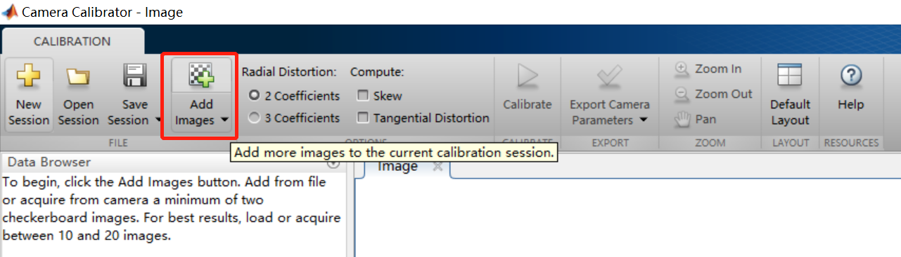
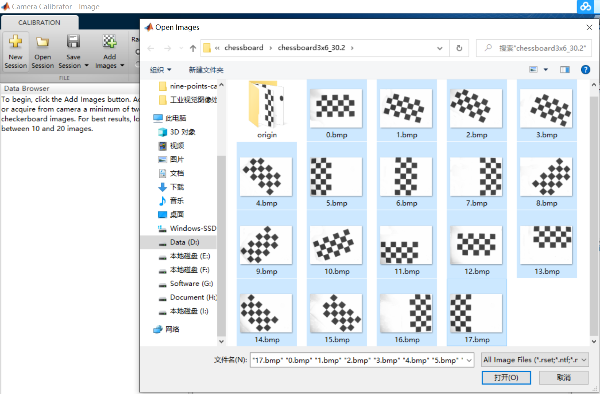
填写棋盘格每个格子边长的真实值，注意要手动测量一下，好多打印机打出来有误差的。
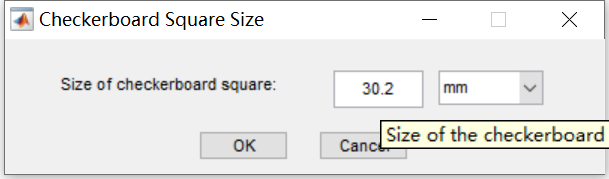
填好边长确定后，matlab会对每张图片进行棋盘格交叉点检测，根据图像分辨率和棋盘格长宽，速度有快有慢。
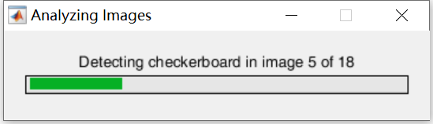
执行完后，如果部分图片无法识别出交叉点或者质量不好，会剔出的。
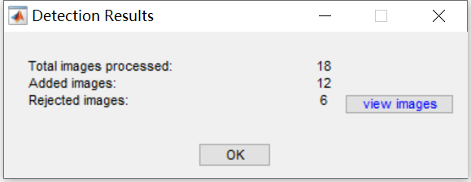
开始MATLAB相机标定，点击界面上的标定按钮
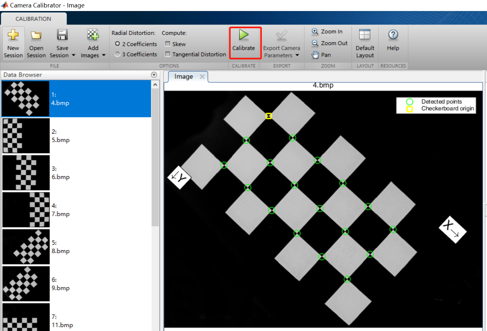
标定完成后，会在原图上显示reproject point，以便检查是否标定有大误差。
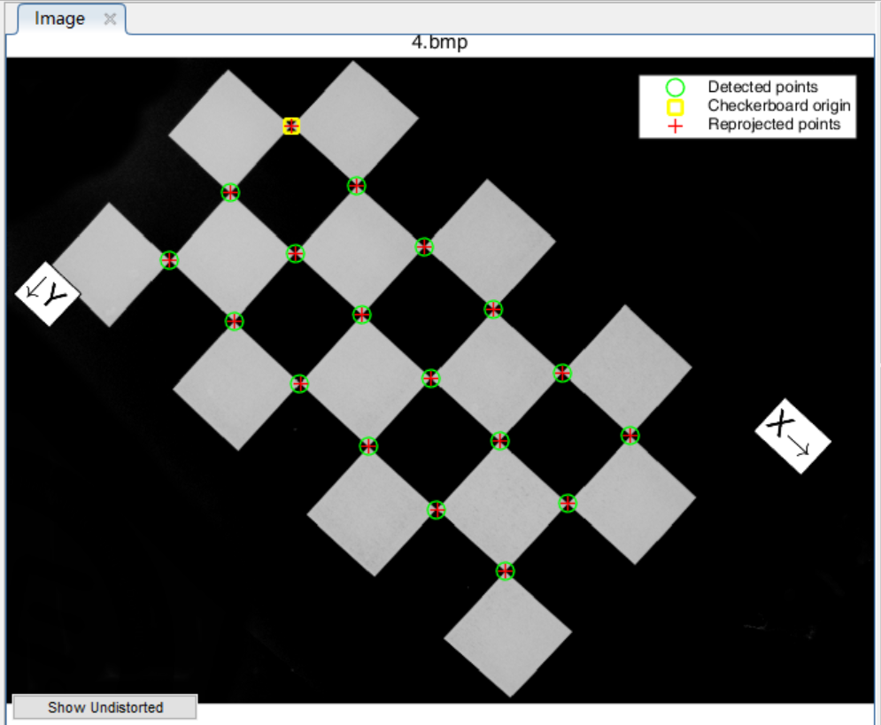
同时会显示标定误差 和 相机与标定板之间相对位置示意图。
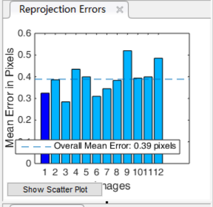 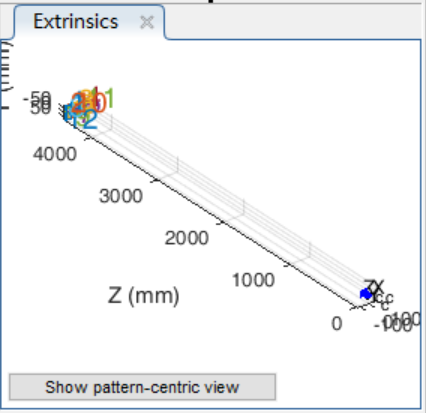
下一步可以导出标定结果参数：
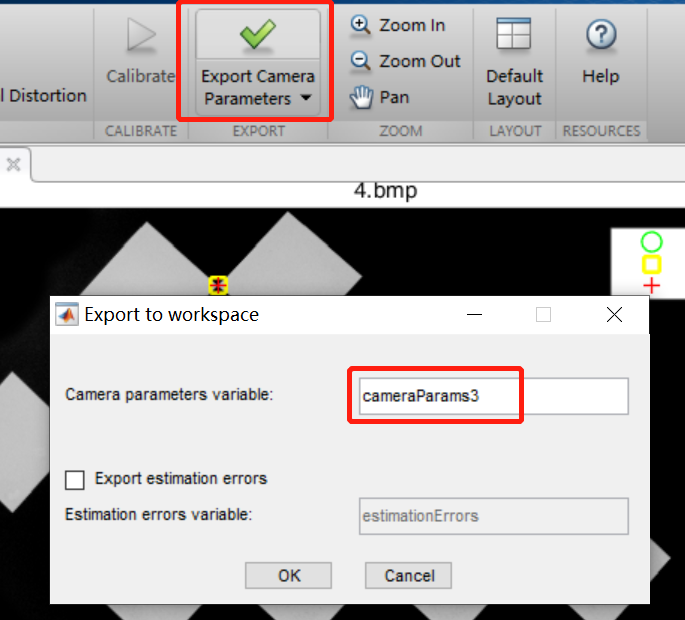
回到matlab主界面，可以查看导出的结果参数值，
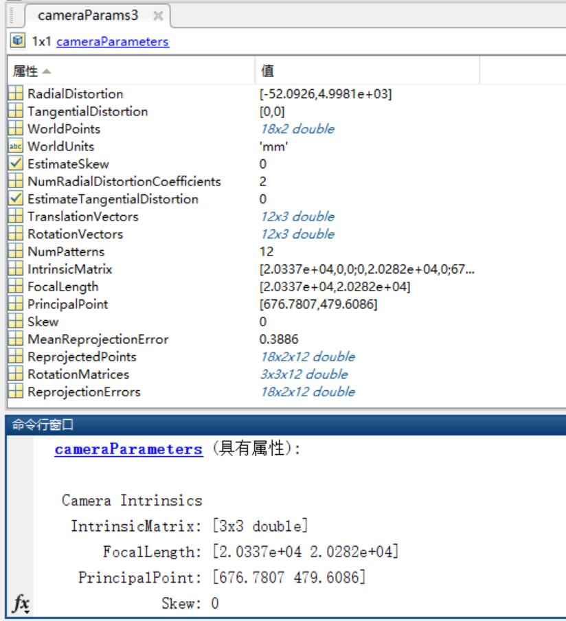
在命令行输入cameraParams.IntrinsicMatrix， cameraParams.RadialDistortion可得到内参矩阵和径向畸变
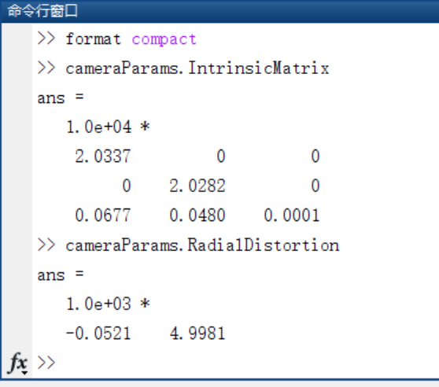
=========================================================================================
根据你的需求，界面上提供了不同选项，来让你获取相机标定、相机矫正的内部和外部参数。
详细相机标定过程请参考：http://www.mathworks.com/help/vision/ug/find-camera-parameters-with-the-camera-calibrator.html#btxr8c_-2
MATLAB相机标定教学视频: http://www.mathworks.com/videos/camera-calibration-with-matlab-81233.html